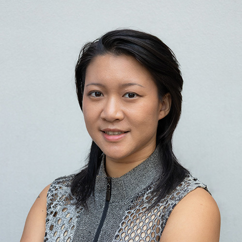

Contact
Feel free to reach out for projects, collaborations, or just to say hello!
(click here to copy)
I’m Rachel, a social design practitioner with over eight years of experience at the intersection of design, public policy, and community organising. My work focuses on building organisational infrastructure to resource underserved communities and catalyse lasting policy change.
My core expertise is the end-to-end management of social and digital infrastructure projects. I excel at translating vision into reality, moving seamlessly from gap analysis and participatory design to operational execution and logistical support. In my previous roles, I have spearheaded multi-stakeholder initiatives connecting policymakers, researchers, NGOs, artists, grassroots movements, cooperatives and start-ups to deliver tangible outcomes: from driving policy change and advancing civic education, to establishing resilient organisations and directing critical resources to communities.
Through systems thinking and strategic communication—underpinned by efficient information architecture and knowledge management—I operationalise complex ideas into actionable strategies and powerful narratives. This holistic approach is grounded in my academic training: I hold a Master of Environmental Management from the Yale School of Environment and a Bachelor of Arts (Honours) in Environmental Studies from Yale-NUS College.
Outside of work, I am a multidisciplinary creator and a lifelong learner. My passion for building and making extends to photography, illustration, dance, sewing clothes, crafting jewelry, horse archery, and coding (I designed and built this website). I speak four languages—English, Mandarin Chinese, French, and Spanish—at varying levels of proficiency. I enjoy the challenge of metabolising knowledge and reconstituting it in novel ways; to me, it is creation itself, the miracle at the heart of life on this wondrous planet.

Feel free to reach out for projects, collaborations, or just to say hello!
(click here to copy)